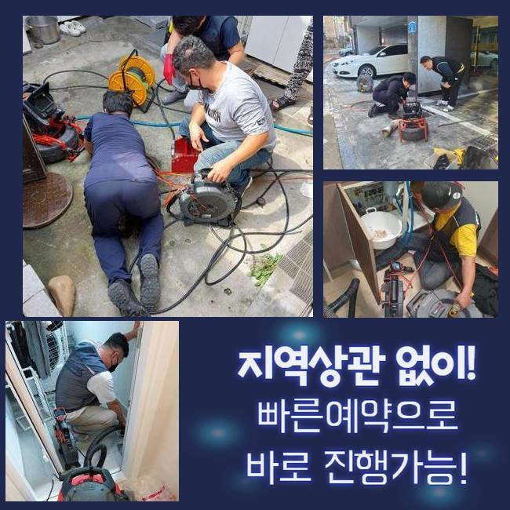
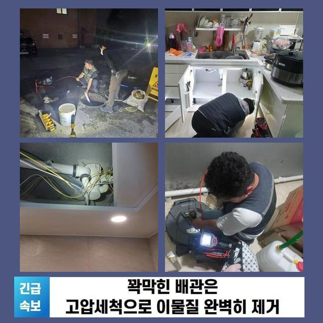
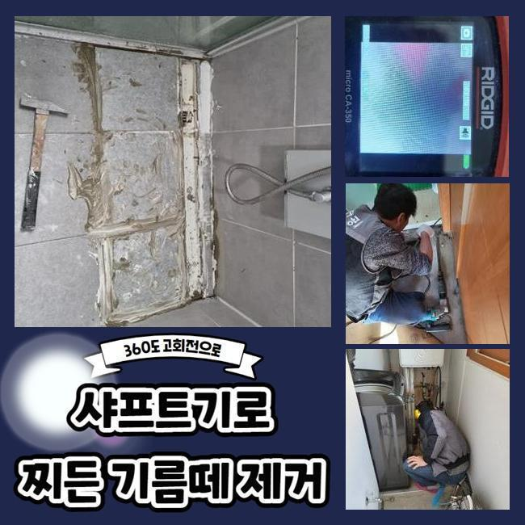
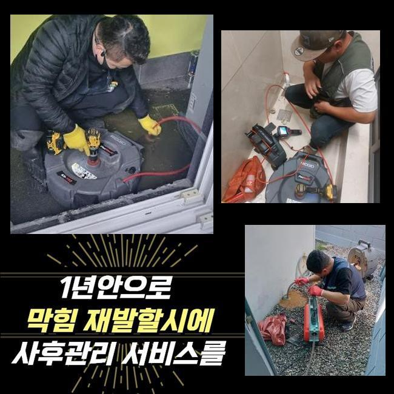
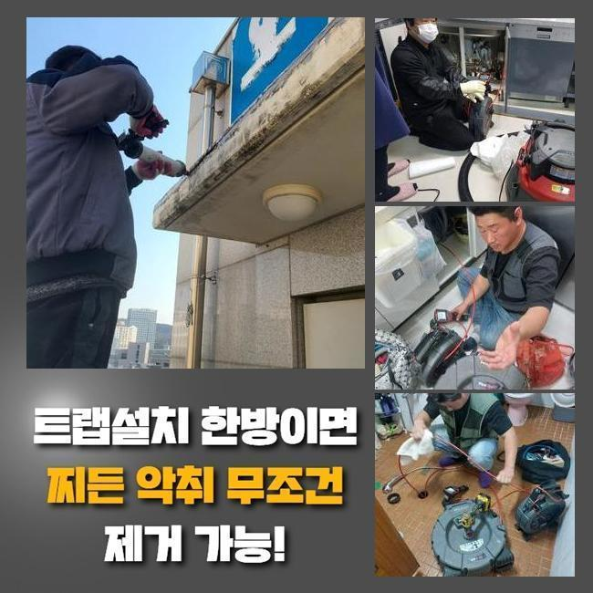
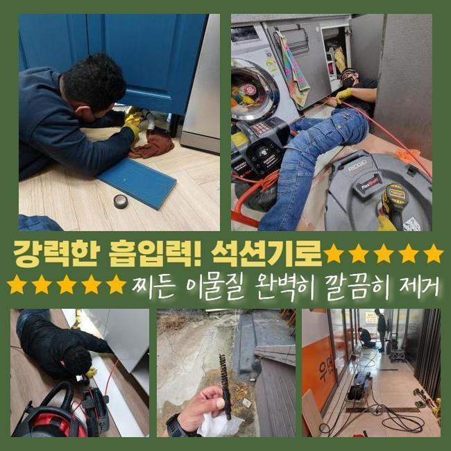
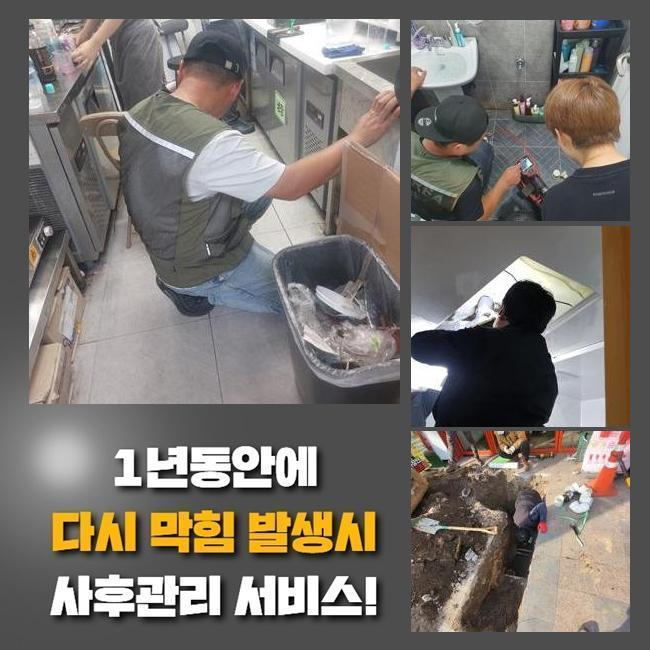

🏠 강서구 내발산동화장실역류 우장산동 배관내시경카메라 배관막힘뚫는업체
용인시 처인구 배관막힘 전문 시공 후기

📋 작업 개요
- 위치: 용인시 처인구, 수원시 영통구, 화성시 동탄
- 서비스 유형: 배관막힘, 하수구청소, 누수수리, 고압세척, 내시경점검
- 작업 일시:
- 업체명: 하수구수사대 (010-5615-2118)
🔍 문제 상황
강서구 내발산동화장실역류 우장산동 배관내시경카메라 배관막힘뚫는업체
날마다 사용하게 되는 물은 개별적인 배관만이 존재하지 않고 한곳에 모여서 이동합니다
이어지다보면 결국에는 한곳에서 수렴을 해서 집수정으로 향하여 최종적으로 배수가 이뤄지는데 이와 같은 과정을 간략히 줄여보자면 각 가구에서 내려보낸 하수가 모이게 되는 메인 파이프가 존재함은 어디서나 동일하겠죠
배출분들을 아우르는 메인관이 중지된다면 건물 전체 가운데 몇 곳은 역류 증세로도 신음해야 합니다
하수가 눈에 띄게 기능이 저하되면 빠르게 손봐주셔야지 건물 속의 여러 호실에 관한 손해를 예방할 수 있습니다
서비스 요청자의 말씀에 따르면 메인하수구를 꼼꼼하게 정화 업무를 해왔지만서도 여전히 1층 호실에서 역류 증세가 가끔 생긴다고 말씀을 하시며 메인관로가 괜찮은지 검사를 저희측에 요구하셨던 겁니다
테스트와 관찰을 병행해보니 대형 배수구까지 차단되어 있던 중증 사태로 보였습니다
불통이 될 정도로 차단된 배관을 수정하고 바로잡기 위해서는 외부 하수구 맨홀부터 길을 내야 진행을 할 수 있을 듯 했습니다
사이즈가 넓은 곳이라서 작업 영역 근처로 차를 가져와 실려있는 고압세척 전원을 켜준 다음에 길쭉한 호스를 넣어서 노폐물을 빼내가는 정돈 과정을 통과하게 됩니다
간단한 장치만 써서는 도통 효과를 보기 힘든 한계에 봉착할 때가 있는데 이럴 때는 강한 압력의 물살을 이용해서 이물질을 공격해서 건조되어 버린 이물질과 동시에 묵혀진 오물까지도 완벽하게 극복시킬 수 있습니다

🔎 원인 분석
💡 전문가 진단: 정밀 진단 장비를 사용하여 슬러지의 고착 여부를 판명하고 타격/세척 작업을 실시했습니다.
어마어마한 외부 시설을 흔히 쓰는 작은 장비로 작업을 들어가는 건 효율도 매우 저하되지만 시간적인 측면으로도 빠르게 설비를 복구하는 게 현실적으로 어려우므로 고압세척이 들어가야한다고 느껴진다면 이러한 환경에 대해서 설명하고 장비를 가동하게 됩니다
어떠한 수단을 적용할지에 대해 미리 동의를 구한 뒤에 착수하니 걱정하지 않으셔도 돼요!
시동을 걸면 나오는 센 물살을 조사하고 있으므로 붙어있던 모든 이물질들이 순간 떨어져나가며 경로를 따라 옥외로 빠지게 됩니다
처리했던 찌꺼기들이 배출되는 시기가 올 때까지 대기하다가 강한 수압을 타겟을 정해서 발사했습니다
촉박한 마음으로 시간에 급급해서 끊임없이 수압을 유지하며 발사한다면 자칫 잘못하면 집안의 배관으로 분사한 물이 거꾸로 올라오고 맙니다
아니면 배관에 데미지가 가거나 갈라짐이 발생하여 누수 현상까지 연결되는 등의 불편한 상황이 초래될 수 있으니 조심스럽게 청소 작업을 담당합니다
세정 과정을 오래 했지만 처리해야할 막힌 부분이 개선이 되지 않아서 내시경 촬영 장치를 주입하여 사유를 추적해 나갔습니다
배관의 구불한 곳에 답답하게 보이는 찌꺼기 뭉치가 끼어있다는 점을 발견하게 되었습니다
이음새 부위의 트랩은 곡선으로 꼬여있어서 물의 이동성이 완전하게 변속되기 때문에 노폐물들을 온전히 추스려지지 않으면 조만간 비슷한 사건이 터지고 말 것입니다
샤프트 기기를 작동시켜서 딱 달라붙은 오물들의 조각화를 시작했습니다
초반부에는 장비가 유입될 완전히 가로막혀 있었던 장면을 보았지만 조금씩 이물질을 다뤄내 주니까 더 들어가도록 허용이 됐네요

🔧 작업 과정
이처럼 심한 막힘이 있다면 한 하수구에서만 뚫음 업무를 시행하는 것 보다는 안쪽과 바깥면 양방향에서 기기를 다 넣어서 정화를 하는 방식이 더 뛰어납니다
샤프트 기기를 운용해서 덩어리를 잘게 쪼개내서 바깥쪽은 고압수 작업을 같이 실시해서 초기에는 엄청났던 이물질이 머무른 대형구간을 순차적을 줄여가는 식으로 개선해 나갔습니다
이렇게 단단히 막혀버렸으니 가장 아래층의 실내에서 역류되는 불상사가 거듭 발현됐던 상황이었어요
물의 폐기가 순탄치 않다면 어느 측면에서 막힘 대상이 잔여했는지 끈기를 갖고 검사하여 완성도를 확보해야 해요
초기에는 노폐물들이 고여있을 만큼 막힌 수준이 심각한 컨디션이었으며 내부에 오래 자리했었는지 경화까지 이루어진 상태라서 다소 도전적인 현장으로 보였습니다
시간이 오래 걸릴거라 예상했던 곳이지만 적합한 장비를 써서 약간씩 뭉친 대상이 깨지면서 이후에는 더욱 쾌적하게 정화 작업을 풀어가게 됐네요
마무리 단계에서도 고압세척 절차를 담당해서 커다란 오염인자를 부순다기 보다는 전체적으로 남아있는 미세한 입자들을 정리정돈한다는 일념으로 내부에 다시 진입해서 물청소까지 실시해 드렸습니다
습도 높은 내부에서 장기간 이물질이 굳어있었기에 피어오른 곰팡이 덩어리도 뿌리 깊게 자리잡히는데 일단 강한 힘의 물줄기를 쏘면은 골칫거리를 다 청소할 수 있어요
작은 입자들이 튀더라도 이 점도 꼼꼼하게 보고서 쾌적한 마무리 정돈까지도 담당하는 부분이므로 우려하지 않으셔도 됩니다
이처럼 고압수의 지원으로 기다란 하수구에 누적됐던 골치아픈 문제 덩어리들을 모조리 삭제하게 되었습니다
내부 구조에서 방출한 수돗물도 파이프로 이동해서 맨홀로 들어오기 시작했으며 투명도도 확보되는 모습을 발견하게 되었습니다
순탄한 속도로 물이 흘러나오는 게 보인다면 이동 경로가 말끔하고 오늘 담당해온 배관의 청결 업무도 완성도가 높다고 판별을 할 수 있습니다
불현듯 덩어리같은 이물질들이 분출될 수 있다는 상황을 감안해서 뜰채를 이용해 사고도 방어해서 깔끔한 주변부를 지켜나갔어요
고압세척을 담당해주는 업체를 찾고 계시면 가장 먼저 작업의 방향성이나 계획을 친절히 알리는 업체에다 연락을 취하셔야 좋을 것입니다
최신 장비를 활용하는지 사실도 확인을 해야 하며 유연하게 조절할 수 있는 유연한 자세를 가졌는지를 비교분석하는 게 필요합니다
에너지 넘치는 힘을 소장하고 있으므로 멀쩡한 곳도 위협할 수 있으니 원만히 조정하는 기술이 필요해요
대과거부터 지속된 일인지 들어간 물질의 장르도 수많았고 썩은 내도 고객님을 괴롭히고 있었던 곳이었어요


✅ 작업 완료
수도시설의 활용이 금지되는 불편함 역시 극심하겠지만 주변부가 오염되는 등의 골치아픈 대형 사고까지도 이어질 위험이 있어요
주축이 되는 하수 시스템이 기능적인 역할을 담당하지 못한다면 건물 자체의 내구성에도 손해를 끼칠 수 있습니다
실내에서의 청소도 필수이나 설비는 이어지기 때문에 전체 배관에 대한 청소와 검사를 자주자주 받아보셔야만 예방 효과를 확보할 수 있습니다
하수구에 특정한 문제가 발현된다면 일반 주택이나 다중 건물이나 영업시설 등 어떤 형태의 건물이라도 스스로 거르는 타선 없이 내방드려서 해소를 해드립니다
홀로 애써본다고 한들 물길이 트일리가 없다는 막막한 벽에 부딪히시면 외면하기만 하지 마시고 하단 번호로 전화를 주시면 얼마든지 설비를 되돌려드릴 수 있어요




⚠️ 하수구 배관 막힘 예방 및 관리 가이드
- ✅ 머리카락, 비닐, 물티슈 등 물에 분해되지 않는 이물질은 절대 흘려보내지 마세요.
- ✅ 기름기 많은 식기는 설거지 전 키친타올로 먼저 기름때를 닦아내세요.
- ✅ 주기적으로 배수구에 뜨거운 물을 가득 부어주어 유지방 고착을 방지하세요.
- ✅ 작업 후 1년 이내 재발 시 무상 A/S 보증 서비스를 제공합니다.
💡 핵심 정리
- 확실한 장비 작업(내시경 점검 및 샤프트 스케일링)으로 원인을 뿌리 뽑습니다.
- 작업 후 1년 이내에 동일한 부위 재발 시 100% 무상 A/S 서비스를 보장합니다.
- 서울 · 경기 · 인천 전 지역에 24시간 언제든 긴급 출동할 수 있도록 항시 대기 중입니다.
❓ 자주 묻는 질문 (FAQ)
🚨 용인시 처인구 배관막힘 문제로 고민이신가요?
정확한 원인 진단과 확실한 시공으로 재발 없는 해결을 약속드립니다.
24시간 긴급 출동 | 서울 · 경기 · 인천 전지역 | 1년 내 재발 시 무상 A/S